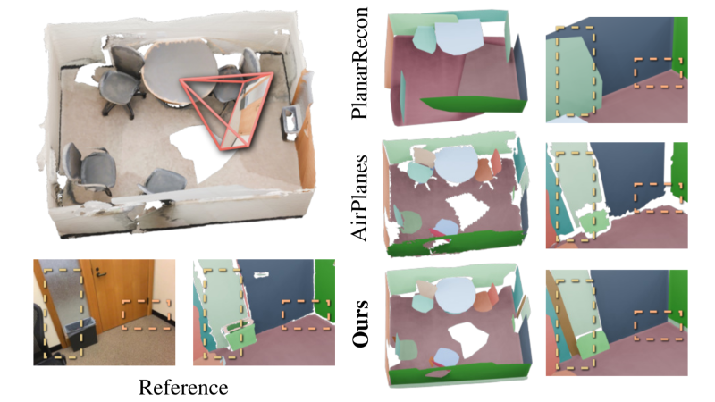

🏖️Ye Hanqiao
PhD Student · 3D Computer Vision · Generative World Models
Hi, I am Hanqiao Ye (/yeh han chow/, 叶翰樵), a fifth-year PhD student at the School of Artificial Intelligence, University of Chinese Academy of Sciences (UCAS). I conduct research at the 3DV Lab@Institute of Automation, Chinese Academy of Sciences (CASIA), supervised by Prof. Shuhan Shen.
Before joining UCAS, I received my B.E. degree from Harbin Institute of Technology, Shenzhen (HITSZ) in 2022, advised by Prof. Jun Xu.
My research focuses on 3D computer vision, especially structured 3D representation, pose estimation, scene understanding, and their applications in mixed reality and robotics. I am currently working on projects related to generative world models.
yehanqiao2022@ia.ac.cn Google Scholar CASIAHanqiao Ye
3DV Lab, CASIA
News
- 2026/02 Two papers were accepted to CVPR 2026.
- 2025/06 We won 1st place in the 2nd Building3D Challenge at the CVPR 2025 Workshop on Urban Scene Modeling.
- 2025/02 One co-authored paper was accepted to CVPR 2025 as a Highlight.
- 2025/02 NeuralPlane was selected for an Oral presentation at ICLR 2025.
- 2024/07 One co-authored paper was accepted to ECCV 2024.
- 2024/06 We won 1st place in the 1st Building3D Challenge at the CVPR 2024 Workshop on Urban Scene Modeling.
Publications

[ICLR 2025 Oral] NeuralPlane
NeuralPlane: Structured 3D Reconstruction in Planar Primitives with Neural Fields
ICLR 2025 Oral
Honors & Awards
- 1st place, Building3D Challenge, CVPR 2024/2025 Workshop on Urban Scene Modeling.
- Outstanding Student, University of Chinese Academy of Sciences, 2024.
- Excellent Scholarship, Harbin Institute of Technology, 2019, 2020, 2021.
- National Scholarship, 2021.
Beyond Research
Last update: 2026.07.11